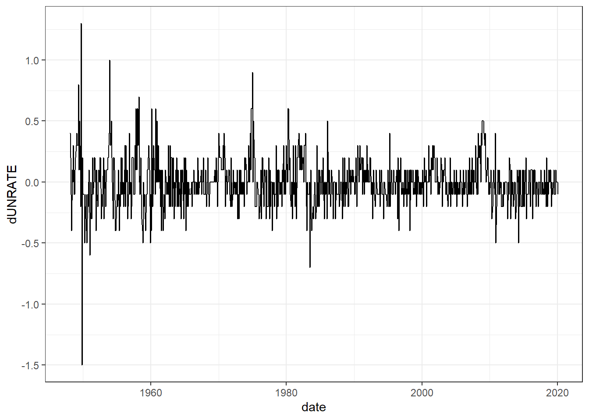
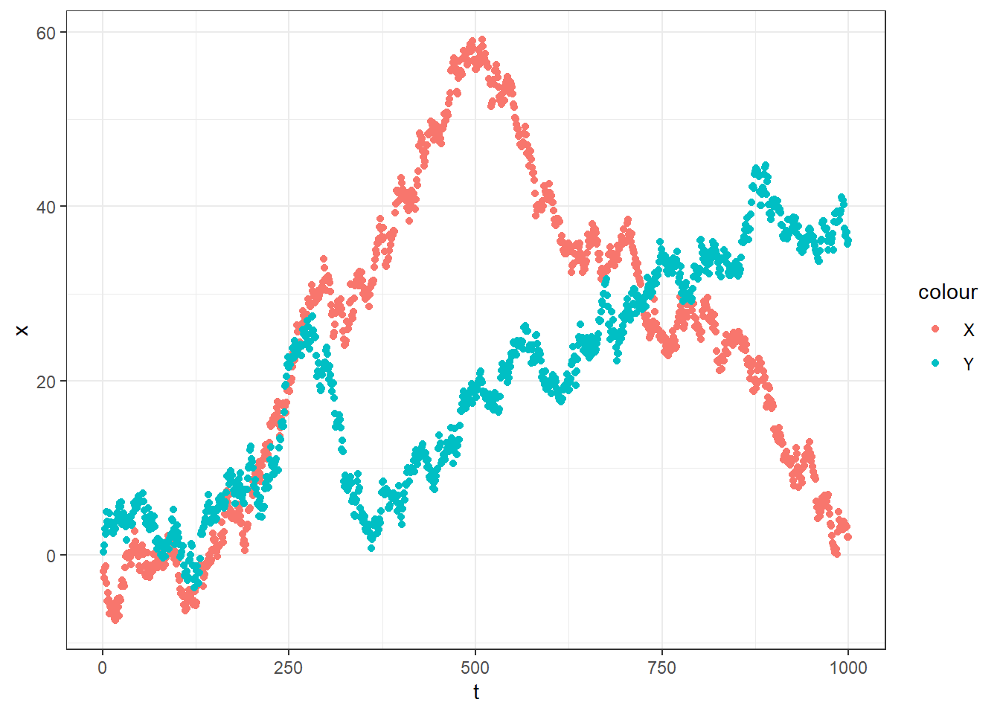

14 Time series – Introduction
14.1 Autoregressive and moving average (ARMA) models: the basic building blocks of time series models
While there are many ways in which observations in a time series \(\{Y_t\}_{t=1}^T\) could be dependent on each other, we almost always start with dependence due to an autoregressive process, a moving average process, or a combination thereof. The autoregressive model assumes that \(Y_t\) depends on the variable’s lags, for example: \[\begin{align} Y_t&=1+0.2Y_{t-1}+\epsilon_t, \quad \epsilon_t\sim iid, \ E[\epsilon_t]=0,\ V[\epsilon_t]=\sigma^2 \end{align}\] Is an AR(1) process, which means that the deterministic component of \(Y_t\) is a (linear) function of the realization of same variable in the previous period.
In general, we can write an autoregresive process as: \[\begin{align} Y_t&=\alpha+\sum_{\tau=1}^k\phi_\tau Y_{t-\tau}+\epsilon_t \end{align}\] where \(k\) is the number of lags of \(Y_t\) included in the model, and \(\{\phi_\tau\}_{\tau=1}^k\) are the coefficients on these lags. If there are \(k\) lags in the model, we call this an ``AR(\(k\))’’ model.
set.seed(42)
simSize<-1000
library(weakARMA)
y1<-tibble(y=sim.ARMA(n=100,ar=0,ma=0),type="(a) White noise") |> mutate(t=1:n())
y2<-tibble(y=sim.ARMA(n=100,ar=0.7,ma=0),type="(b) AR(1)")|> mutate(t=1:n())
y3<-tibble(y=sim.ARMA(n=100,ar=c(0.2,0.5),ma=0),type="(c) AR(2)")|> mutate(t=1:n())
y4<-tibble(y=sim.ARMA(n=100,ar=-0.8,ma=0),type="(d) AR(1) (negative autocorrelation)")|> mutate(t=1:n())
d<-rbind(y1,y2,y3,y4)
(
ggplot(d,aes(x=t,y=y))
+geom_line()
+theme_bw()
+facet_wrap(~type)
)Figure 14.1: Some simulated AR data
Figure ?? shows a white noise process (panel (a), basically just iid errors with no dependence), followed by three autoregressive processes. Panel (b) shows an AR(1) process with \(\alpha = 0\) and \(\phi_1=0.7\). Compared to panel (a), in this plot large values of \(Y\) are likely to be followed by another large value. This is because, on average, \(E[Y_t\mid Y_{t-1}]=0.7Y_{t-1}>0\).
The other building block of time series processes is the moving average. An example of this is: \[\begin{align} Y_t&=\psi\epsilon_{t-1}+\epsilon_{t} \end{align}\]
which is an MA(1) process. The “MA” part means “moving average”, in that \(Y_t\) is a (weighted) average of errors that have occurred in the past. The “(1): part means that only the error that occurred one time period into the past (i.e. \(\epsilon_{t-1}\)) shows up in this process. In general, we can write an arbitrary MA(\(k\)) process as: \[\begin{align} Y_t&=\alpha + \sum_{\tau=1}^k\psi_\tau\epsilon_{t-\tau}+\epsilon_t \end{align}\] Note that while these processes look almost exactly the same, except that for the moving average process, we are lagging the errors, instead of the \(Y\).
set.seed(42)
simSize<-1000
library(weakARMA)
y1<-tibble(y=sim.ARMA(n=100,ar=0,ma=0),type="(a) White noise") |> mutate(t=1:n())
y2<-tibble(y=sim.ARMA(n=100,ar=0,ma=0.7),type="(b) MA(1)")|> mutate(t=1:n())
y3<-tibble(y=sim.ARMA(n=100,ma=c(0.2,0.5),ar=0),type="(c) MA(2)")|> mutate(t=1:n())
y4<-tibble(y=sim.ARMA(n=100,ma=-0.8,ar=0),type="(d) MA(1) (negative autocorrelation)")|> mutate(t=1:n())
d<-rbind(y1,y2,y3,y4)
(
ggplot(d,aes(x=t,y=y))
+geom_line()
+theme_bw()
+facet_wrap(~type)
)Figure 14.2: Some simulated MA data
Some simple moving average processes are shown in Figure 14.2 It might be difficult to spot the difference between these and the autoregressive processes in Figure 14.1, this is why the autocorrelation function and partial autocorrelation function are useful.
14.2 Stationarity and properties of ARMA processes
Until we get to the unit root problem, we are going to implicitly assume that we are dealing with stationary processes. Intuitively, this means that if you pick two time periods, say \(t\) and \(s\), then any unconditional beliefs you have about \(Y_t\) and \(Y_{s}\) are going to be the same. Additionally, any unconditional beliefs you have about \(Y_{t+1}\) and \(Y_{s+1}\) sill be the same. In fact any unconditional beliefs you have about \(Y_{t+\tau}\) and \(Y_{s+\tau}\) for any \(\tau\) will be the same.
Please read through this again and underline, highlight, etc. the “unconditional” part. Here’s an example. Consider the AR(1) process: \[\begin{align} Y_{t}&=0.5Y_{t-1}+\epsilon_t \end{align}\] which happens to be stationary. If I asked you to make a forecast of \(Y_t\) at a particular time, but gave you no more information than the above equation, then you’d probably (and quite rightly) note that since you don’t know \(Y_{t-1}\), or any of the other \(Y\)s that came before it, and you know the errors are all mean zero, that a good point prediction would be to choose \(E[Y_t]=0\). But if I asked you to make a prediction for some other time period \(s\), you would have done exactly the same thing: since I’ve given you nothing to refine your beliefs, this is the best you can do. Now if I told you the actual value of \(Y_{t-1}\), you’d be able to make a better forecast of \(Y_t\), namely \(E[Y_t\mid Y_{t-1}]=0.5Y_{t-1}\), but then you’d be conditioning on something.
For our purposes, we will think about stationary time series as follows:
If a process \(Y_t\) is stationary, then (among other things): \[\begin{align} E[Y_t]&=E[Y_{t+1}]=E[Y_{t-1}]=E[Y_{t+\tau}]\quad &\text{for all } \tau\in\mathbb N\\ V[Y_t]&=V[Y_{t+1}]=V[Y_{t-1}]=V[Y_{t+\tau}]\quad &\text{for all } \tau\in\mathbb N\\ \mathrm{cov}(Y_t,Y_{t+1})&=\mathrm{cov}(Y_{t+1},Y_{t+2}) =\mathrm{cov}(Y_{t+\tau},Y_{t+1+\tau})&\text{for all } \tau\in\mathbb N\\ \mathrm{cov}(Y_t,Y_{t+s})&=\mathrm{cov}(Y_{t+\tau},Y_{t+\tau+s})&\text{for all } \tau, s\in\mathbb N \end{align}\]
Basically all of those things are constant. Importantly, note that in general: \[\begin{align} \mathrm{cov}(Y_t,Y_{t+s})&\neq\mathrm{cov}(Y_t,Y_{t+\tau})&\text{for all } \tau, s\in\mathbb N \end{align}\] which of course isn’t even true for our AR(1) process above, because the effect of \(Y_t\) on \(Y_{t+s}\) diminishes as \(s\) gets larger. In fact, this is another property of stationary processes: as we want to forecast further and further into the future, any information we have now becomes more and more useless.
14.2.1 Examples
Here are some worked examples showing how to derive some properties of stationary time series. I will focus on determining the expectation, variance, and covariances of each series. For all of the errors \(\epsilon_t\) we will assume:
\[ \begin{aligned} \epsilon_t&\sim iid\quad\text{not necessarily normally distributed}\\ E(\epsilon_t)&=0\\ V(\epsilon_t)&=\sigma^2\\ \mathrm{cov}(\epsilon_t,\epsilon_{t+\tau})&=0\ \forall \tau\neq 0 \end{aligned} \]
The last property is an implication of the iid assumption, and so is not an additional assumption.
In each of these examples, note where we assume stationarity in order to simplify the problem.
14.2.1.1 \(AR(1)\) process
\[ \begin{aligned} y_{t}&=\alpha y_{t-1}+\epsilon_t \end{aligned} \]
\[ \begin{aligned} E(y_t)&=E(\alpha y_{t-1}+\epsilon_t)\\ &=\alpha E(y_{t-1})+E(\epsilon_t)\\ &=\alpha E(y_t)+0\quad \text{stationarity assumed here}\\ (1-\alpha)E(y_t)&=0\\ E(y_t)&=0 \end{aligned} \] \[ \begin{aligned} V(y_t)&=V(\alpha y_{t-1}+\epsilon_t)\\ &=\alpha^2V(y_{t-1})+V(\epsilon_t)\\ &=\alpha^2 V(y_t)+\sigma^2\quad\text{stationarity assumed here}\\ (1-\alpha^2)V(y_t)&=\sigma^2\\ V(y_t)&=\frac{\sigma^2}{1-\alpha^2} \end{aligned} \]
\[ \begin{aligned} \mathrm{cov}(y_t,y_{t-1})&=E(y_ty_{t-1})\\ &=E((\alpha y_{t-1}+\epsilon_t)y_{t-1})\\ &=\alpha E(y_{t-1}^2)+E(\epsilon_ty_{t-1})\\ &=\alpha V(y_{t-1})+0\\ &=\frac{\alpha\sigma^2}{1-\alpha^2} \end{aligned} \]
\[ \begin{aligned} \mathrm{cov}(y_t,y_{t-k})&=E(y_ty_{t-k})\\ &=E((\alpha y_{t-1}+\epsilon_t)y_{t-k})\\ &=\alpha E(y_{t-1}y_{t-k})+E(\epsilon_ty_{t-k})\\ &=\alpha E(y_ty_{t-k+1})+0\quad\text{stationarity assumed here}\\ &=\alpha\mathrm{cov}(y_t,y_{t-k+1}) \end{aligned} \]
So we have:
\[ \begin{aligned} \mathrm{cov}(y_t,y_{t-1})&=\alpha\frac{\sigma^2}{1-\alpha^2}\\ \mathrm{cov}(y_t,y_{t-2})&=\alpha^2\frac{\sigma^2}{1-\alpha^2}\\ &\ldots\\ \mathrm{cov}(y_t,y_{t-k})&=\alpha^k\frac{\sigma^2}{1-\alpha^2} \end{aligned} \]
14.2.1.2 \(MA(1)\) process
\[ y_t=\epsilon_t+\gamma\epsilon_{t-1} \]
\[ \begin{aligned} E(y_t)&=E(\epsilon_t+\gamma\epsilon_{t-1})\\ &=E(\epsilon_t)+\gamma E(\epsilon_{t-1})\\ &=0+\gamma 0\\ &=0 \end{aligned} \]
\[ \begin{aligned} V(y_{t})&=E(y_t^2)\\ &=E(\epsilon_t^2+2\gamma\epsilon_t\epsilon_{t-1}+\gamma^2\epsilon_{t-1}^2)\\ &=E(\epsilon_t^2)+2\gamma E(\epsilon_t\epsilon_{t-1})+\gamma^2E(\epsilon_{t-1})\\ &=\sigma^2+2\gamma0+\gamma^2\sigma^2\\ &=\sigma^2(1+\gamma^2) \end{aligned} \]
\[ \begin{aligned} \mathrm{cov}(y_t,y_{t-1})&=E(y_ty_{t-1})\\ &=E((\epsilon_t+\gamma\epsilon_{t-1})(\epsilon_{t-1}+\gamma\epsilon_{t-2}))\\ &=E\left(\epsilon_t\epsilon_{t-1}+\gamma\epsilon_t\epsilon_{t-2}+\gamma\epsilon_{t-1}^2+\gamma^2\epsilon_t\epsilon_{t-2}\right)\\ &=E(\epsilon_t\epsilon_{t-1})+\gamma E(\epsilon_t\epsilon_{t-2})+\gamma E(\epsilon_{t-1}^2)+\gamma^2E(\epsilon_t\epsilon_{t-2})\\ &=0+\gamma0+\gamma\sigma^2+\gamma^20\\ &=\gamma\sigma^2 \end{aligned} \]
For \(k\geq 2\):
\[ \begin{aligned} \mathrm{cov}(y_t,y_{t-k})&=E(y_t,y_{t-k})\\ &=E\left((\epsilon_t+\gamma\epsilon_{t-1})(\epsilon_{t-k}+\gamma\epsilon_{t-k-1})\right)\\ &=E\left(\epsilon_t\epsilon_{t-k}+\gamma\epsilon_t\epsilon_{t-k-1}+\gamma\epsilon_{t-1}\epsilon_{t-k}+\gamma^2\epsilon_{t-1}\epsilon_{t-k-1}\right)\\ &=E(\epsilon_t\epsilon_{t-k})+\gamma E(\epsilon_t\epsilon_{t-k-1})+\gamma E(\epsilon_{t-1}\epsilon_{t-k})+\gamma^2E(\epsilon_{t-1}\epsilon_{t-k-1})\\ &=0 \end{aligned} \]
This is a big distinction between an AR and an MA process: the AR process will always “remember” \(y_{t-k}\) (although it is diluted over time if the process is stationary), while no component of \(y_{t-\tau}\) appears in \(y_t\) for an \(MA(k)\) process with \(\tau>k\)
14.2.1.3 \(MA(1,1)\) process
\[ \begin{aligned} y_t&=\alpha y_{t-1}+\epsilon_t+\gamma\epsilon_{t-1} \end{aligned} \]
\[ \begin{aligned} E(y_t)&=E(\alpha y_{t-1}+\epsilon_t+\gamma\epsilon_{t-1})\\ &=\alpha E(y_{t-1})+E(\epsilon_t)+\gamma E(\epsilon_{t-1})\\ &=\alpha E(y_{t-1})+0+\gamma0\\ &=\alpha E(y_t)\quad\text{stationarity assumed here}\\ (1-\alpha)E(y_t)&=0\\ E(y_t)&=0 \end{aligned} \]
For \(V(y_t)\), note that \(\epsilon_{t-1}\) shows up in the equation for \(y_{t-1}\):
\[ \begin{aligned} V(y_t)&=V(\alpha y_{t-1}+\epsilon_t+\gamma\epsilon_{t-1})\\ &=E\left((\alpha y_{t-1}+\epsilon_t+\gamma\epsilon_{t-1})^2\right)\\ &=E\left(\alpha^2y_{t-1}^2+\epsilon_t^2+\gamma^2\epsilon_{t-1}^2+2\alpha y_{t-1}\epsilon_t+2\alpha\gamma y_{t-1}\epsilon_{t-1}+2\gamma\epsilon_t\epsilon_{t-1}\right) \\ &=\alpha^2 E(y_{t-1}^2)+E(\epsilon_t^2)+\gamma^2E(\epsilon_{t-1}^2)+2\alpha E(y_{t-1}\epsilon_{t}) +2\alpha\gamma E(y_{t-1}\epsilon_{t-1})+2\gamma E(\epsilon_t\epsilon_{t-1}) \\ &=\alpha^2 E(y_{t-1}^2)+E(\epsilon_t^2)+\gamma^2E(\epsilon_{t-1}^2)+2\alpha 0 +2\alpha\gamma E(y_{t-1}\epsilon_{t-1})+2\gamma0\\ &=\alpha^2 V(y_t)+\sigma^2+\gamma^2\sigma^2+2\alpha\gamma E((\alpha y_{t-2}\epsilon_{t-1}+\epsilon_{t-1}^2+\gamma\epsilon_{t-2}\epsilon_{t-1})) \quad\text{stationarity assumed here}\\ &=\alpha^2 V(y_t)+\sigma^2+\gamma^2\sigma^2+2\alpha\gamma \left[\alpha \overbrace{E(y_{t-2}\epsilon_{t-1})}^{=0}+E(\epsilon_{t-1}^2)+\gamma \overbrace{E(\epsilon_{t-2}\epsilon_{t-1})}^{=0}\right] \\ (1-\alpha^2)V(y_t)&=\sigma^2+\gamma^2\sigma^2+2\alpha\gamma\sigma^2 \\ &=\sigma^2(1+\gamma^2+2\alpha\gamma)\\ V(y_t)&=\frac{\sigma^2(1+\gamma^2+2\alpha\gamma)}{1-\alpha^2} \end{aligned} \] which we can check by:
- substituting in \(\gamma=0\) and comparing it to the AR(1) derivation
- substituting in \(\alpha=0\) and comparing it to the MA(1) derivation
\[ \begin{aligned} \mathrm{cov}(y_t,y_{t-1})&=E(y_ty_{t-1})\\ &=E((\alpha y_{t-1}+\epsilon_t+\gamma\epsilon_{t-1})y_{t-1})\\ &=\alpha E(y_{t-1}^2)+E(\epsilon_t y_{t-1})+\gamma E(\epsilon_{t-1}y_{t-1})\\ &=\alpha V(y_{t})+0+\gamma E(\epsilon_{t-1}(\alpha y_{t-2}+\epsilon_{t-1}+\gamma\epsilon_{t-2}))\\ &=\alpha V(y_t)+\gamma E(\epsilon_{t-1}^2)\\ &=\sigma^2\left[\frac{1+\gamma^2+2\alpha\gamma}{1-\alpha^2}+\gamma\right] \end{aligned} \]
For \(k\geq 2\)
\[ \begin{aligned} \mathrm{cov}(y_t,y_{t-k})&=E(y_t,y_{t-k})\\ &=E\left((\alpha y_{t-1}+\epsilon_t+\gamma\epsilon_{t-1})y_{t-k}\right)\\ &=\alpha E(y_{t-1}y_{t-k})+E(\epsilon_ty_{t-k})+\gamma E(\epsilon_{t-1}y_{t-k})\\ &=\alpha\mathrm{cov}(y_{t-1}y_{t-k})+0+0\\ &=\alpha\mathrm{cov}(y_t,y_{t-k+1}) \end{aligned} \]
But here, compared to the \(AR(1)\) model, we can’t build up the sequence from \(\mathrm{cov}(y_t,y_{t-1})\). We need to do it from:
\[ \begin{aligned} \mathrm{cov}(y_t,y_{t-2})&=E(y_ty_{t-2})\\ &=E\left((\alpha y_{t-1}+\epsilon_t+\gamma\epsilon_{t-1})y_{t-2}\right)\\ &=E\left((\alpha(\alpha y_{t-2}+\epsilon_{t-1}+\gamma\epsilon_{t-2})+\epsilon_t+\gamma\epsilon_{t-1})y_{t-2}\right)\\ &=\alpha^2 E(y_{t-2}^2)+\alpha E(\epsilon_{t-1}y_{t-2})+\alpha\gamma E(\epsilon_{t-2}y_{t-2})+E(\epsilon_ty_{t-2})+\gamma E(\epsilon_{t-1}y_{t-2})\\ &=\alpha^2V(y_t)+0+\alpha\gamma E(\epsilon_{t-2}(\alpha y_{t-3}+\epsilon_{t-2}+\gamma\epsilon_{t-3}))+0\\ &=\alpha^2 V(y_t)+\alpha\gamma\sigma^2 \end{aligned} \]
14.3 Diagnostics: Autocorrelation and partial autocorrelation functions
Autocorrelation and partial autocorrelation functions are useful ways to graphically represent the serial correlation in a time series. For stationary time series, the autocorrelation function (ACF) is defined as: \[\begin{align} R(\tau)&=\frac{E[(Y_t-\mu)(Y_{t-\tau}-\mu)]}{\sigma^2} \end{align}\] In words, this is the correlation between our random variable, and its value \(\tau\) periods in the past, or \(\mathrm{corr}(Y_t,Y_{t-\tau})\). If \(Y_t\) is an \(\mathrm{MA}(k)\) process, then \(R(\tau)\neq 0\) for \(\tau= k\), and zero for \(\tau>k\).
The partial autocorrelation function is defined recursively, and involves projection matrices. In upholding my promise to not go into matrix algebra, I will hold off on the formal definition, and provide this intuition instead: You estimate the model: \[\begin{align} Y_t&=\beta_0+\beta_1Y_{t-1}+\beta_2Y_{t-2}+\ldots+\beta_\tau Y_{t-\tau}+\epsilon_t \end{align}\] The partial autocorrelation function is equal to: \[\begin{align} \alpha(\tau)=\mathrm{plim}\hat\beta_\tau \end{align}\] That is, after controlling for all lags of lower order, how much additional explanatory power does \(Y_{t-\tau}\) provide for \(Y_t\). An \(\mathrm{AR}(k)\) process will have \(\alpha(\tau)\neq 0\) for \(\tau= k\), and zero for \(\tau>k\).
We can therefore use the sample analog of these to diagnose the presence of autocorrelation, and maybe even the type of autocorrelation present (if it is not too fancy).
Sometimes these are reasonably easy to spot. For example the following Figures show these functions for an AR(2) and MA(2) process respectively.
However things get more messy when there are both MA and AR components present
14.4 Example dataset – unemployment
Source: https://fred.stlouisfed.org/series/UNRATE
downloaded on 2023-03-22
unemp<-read.csv("data/UNRATE.csv") |> tibble() |> mutate(t=1:n(), date=DATE |> ymd()) |> filter(date<"2020-03-01")
(
ggplot(unemp,aes(x=date,y=UNRATE))
+geom_line()
+theme_bw()
)Differenced unemployment rate
unemp<-(
unemp
|> mutate(dUNRATE = UNRATE-lag(UNRATE))
)
(
ggplot(unemp,aes(x=date,y=dUNRATE))
+geom_line()
+theme_bw()
)## Warning: Removed 1 row containing missing values or values outside the scale range
## (`geom_line()`).
Log-differenced unemployment rate:
unemp<-(
unemp
|> mutate(ldUNRATE = log(UNRATE)-log(lag(UNRATE)))
)
(
ggplot(unemp,aes(x=date,y=ldUNRATE))
+geom_line()
+theme_bw()
)## Warning: Removed 1 row containing missing values or values outside the scale range
## (`geom_line()`).The ACF and PACF of log-differenced unemployment
14.5 Stationarity and testing for unit roots
One sign of a non-stationary distribution is a “unit root”. For an AR(1) process, this occurs when the coefficient on lagged \(Y\) is equal to one. If this is the case, the \(Y_t\)’s effect of \(Y_{t+\tau}\) will always be the same, and we will run into some problems with spurious regressions. It is therefore important to recognize unit roots when we have them, because it indicates that our data are non-stationary, and so we will need to difference them before analyzing them. Unfortunately we can have a non-stationary dataset even without a unit root (I will have an example of this soon).
Here I present two tests for unit roots. The first, the Dickey-Fuller test, has a null of a unit root. Specifically, if we have an AR(1) process with a unit root, then:
\[ \begin{aligned} Y_t&=Y_{t-1}+\epsilon_t\\ Y_{t}-Y_{t-1}&=\gamma Y_{t-1}-Y_{t-1}+\epsilon_t\\ &=(\gamma-1)Y_{t-1}+\epsilon_t\\ &=\alpha Y_{t-1}+\epsilon_t \end{aligned} \]
That is, if we have a unit root, then \(\alpha=0\), which is our null. We therefore hope to reject this null. The augmented Dickey-Fuller includes some extra lagged \(\Delta Y_{t-k}\)s and a time trend. Since the null hypothesis is that we have a unit root, we hope to reject the null.
##
## Augmented Dickey-Fuller Test
##
## data: unemp$UNRATE
## Dickey-Fuller = -3.6944, Lag order = 9, p-value = 0.02427
## alternative hypothesis: stationary##
## Augmented Dickey-Fuller Test
##
## data: unemp$dUNRATE
## Dickey-Fuller = -8.4335, Lag order = 9, p-value = 0.01
## alternative hypothesis: stationary##
## Augmented Dickey-Fuller Test
##
## data: unemp$ldUNRATE
## Dickey-Fuller = -8.4713, Lag order = 9, p-value = 0.01
## alternative hypothesis: stationaryThe KPSS (Kwiatkowski–Phillips–Schmidt–Shin) test on the other hand has a null that the data are stationary (around a deterministic trend). The alternative is that there is a unit root. Therefor we hope to fail to reject this null.
## Warning in kpss.test(unemp$UNRATE): p-value smaller than printed p-value##
## KPSS Test for Level Stationarity
##
## data: unemp$UNRATE
## KPSS Level = 1.2718, Truncation lag parameter = 6, p-value = 0.01## Warning in kpss.test(unemp$dUNRATE): p-value greater than printed p-value##
## KPSS Test for Level Stationarity
##
## data: unemp$dUNRATE
## KPSS Level = 0.098479, Truncation lag parameter = 6, p-value = 0.1## Warning in kpss.test(unemp$ldUNRATE): p-value greater than printed p-value##
## KPSS Test for Level Stationarity
##
## data: unemp$ldUNRATE
## KPSS Level = 0.11827, Truncation lag parameter = 6, p-value = 0.114.6 Non-stationarity and spurious correlation
14.6.2 Two variables are cyclical
14.6.3 Two variables have a unit root
d<-tibble(
x = sim.ARMA(n=simSize,ar=1),
y = sim.ARMA(n=simSize,ar=1),
t = 1:simSize
)
(
ggplot(data=d,aes(x=x,y=y))
+geom_point()
+theme_bw()
+geom_smooth(method="lm",formula="y~x")
)(
ggplot()
+geom_point(data=d,aes(x=t,y=x,color="X"))
+geom_point(data=d,aes(x=t,y=y,color="Y"))
+theme_bw()
)
14.7 Differencing and stationarity
A non-stationary time series can often be made stationary using differencing. Therefore, if we have identified a non-stationary distribution, perhaps through one of the tests described above, in order to analyze it with techniques that assume stationarity, we need to transform the series into a stationary one.
14.7.1 Some examples of making non-stationary series stationary through differencing
14.7.2 Example dataset: US Consumer Price Index
- “Consumer Price Index for All Urban Consumers: All Items in U.S. City Average”
- Source: https://fred.stlouisfed.org/series/CPIAUCSL downloaded on 2023-03-29
CPI<-(
read.csv("data/CPIAUCSL.csv")
|> mutate(DATE = DATE |> ymd())
)
(
ggplot(CPI,aes(x=DATE,y=CPIAUCSL))
+geom_line()
+theme_bw()
+labs(title = "CPI in levels")
)We can test for a unit root (which implies non-stationarity, but is not the only kind of non-stationarity).
Using the Augmented Dickey-Fuller test (recall that the null hypothesis is that there is a unit root):
##
## Augmented Dickey-Fuller Test
##
## data: CPI$CPIAUCSL
## Dickey-Fuller = -0.74897, Lag order = 9, p-value = 0.9662
## alternative hypothesis: stationaryUsing the KPSS test (recall the the null hypothesis is that there is not a unit root):
## Warning in kpss.test(CPI$CPIAUCSL): p-value smaller than printed p-value##
## KPSS Test for Level Stationarity
##
## data: CPI$CPIAUCSL
## KPSS Level = 13.039, Truncation lag parameter = 6, p-value = 0.01So both tests suggest that we have a unit root, and so the data are non-stationary. Let’s see what happens with first differences:
CPI<-(CPI |> mutate(CPIAUCSL_D1 = CPIAUCSL-lag( CPIAUCSL,n=1)))
(
ggplot(CPI,aes(x=DATE,y=CPIAUCSL_D1))
+geom_line()
+theme_bw()
+labs(title = "CPI in first differences")
)## Warning: Removed 1 row containing missing values or values outside the scale range
## (`geom_line()`).This looks like there is no trend in the mean (good), but there is a trend in the variance (not good). Let’s see what the unit root tests tell us:
## Warning in adf.test(cpi$CPIAUCSL_D1): p-value smaller than printed p-value##
## Augmented Dickey-Fuller Test
##
## data: cpi$CPIAUCSL_D1
## Dickey-Fuller = -5.5009, Lag order = 9, p-value = 0.01
## alternative hypothesis: stationary## Warning in kpss.test(cpi$CPIAUCSL_D1): p-value smaller than printed p-value##
## KPSS Test for Level Stationarity
##
## data: cpi$CPIAUCSL_D1
## KPSS Level = 3.7684, Truncation lag parameter = 6, p-value = 0.01so we have conflicting results.
Sometimes, working in log-differences can stabilize a trend in the variance:
CPI<-CPI |> mutate(CPIAUCSL_logD1 = log(CPIAUCSL)-log(lag(CPIAUCSL,n=1)))
(
ggplot(CPI,aes(x=DATE,y=CPIAUCSL_logD1))
+geom_line()
+theme_bw()
+labs(title = "CPI in log first differences")
)## Warning: Removed 1 row containing missing values or values outside the scale range
## (`geom_line()`).So it looks like the variance problem is mitigated.
## Warning in adf.test(cpi$CPIAUCSL_logD1): p-value smaller than printed p-value##
## Augmented Dickey-Fuller Test
##
## data: cpi$CPIAUCSL_logD1
## Dickey-Fuller = -4.3264, Lag order = 9, p-value = 0.01
## alternative hypothesis: stationary## Warning in kpss.test(cpi$CPIAUCSL_logD1): p-value smaller than printed p-value##
## KPSS Test for Level Stationarity
##
## data: cpi$CPIAUCSL_logD1
## KPSS Level = 0.88213, Truncation lag parameter = 6, p-value = 0.01However the two tests are giving conflicting results. Specifically ADF \(\implies\) stationarity, but KPSS \(\implies\) non-stationarity.
Let’s try second-order differencing in logs:
CPI<-(
CPI
|> mutate(CPIAUCSL_logD2 = CPIAUCSL_logD1-lag(CPIAUCSL_logD1,n=1))
)
(
ggplot(CPI,aes(x=DATE,y=CPIAUCSL_logD2))
+geom_line()
+theme_bw()
+labs(title = "CPI in log second differences")
)## Warning: Removed 2 rows containing missing values or values outside the scale range
## (`geom_line()`).
## Warning in adf.test(cpi$CPIAUCSL_logD2): p-value smaller than printed p-value##
## Augmented Dickey-Fuller Test
##
## data: cpi$CPIAUCSL_logD2
## Dickey-Fuller = -15.139, Lag order = 9, p-value = 0.01
## alternative hypothesis: stationary## Warning in kpss.test(cpi$CPIAUCSL_logD2): p-value greater than printed p-value##
## KPSS Test for Level Stationarity
##
## data: cpi$CPIAUCSL_logD2
## KPSS Level = 0.008577, Truncation lag parameter = 6, p-value = 0.1So now the conclusions from the tests are in agreement at the 5% level of significance.
Comment from Dr. Black: look at 12-month lags, becuase there should be seasonality
CPI<-(
CPI
|> mutate(CPIAUCSL_log12 = log(CPIAUCSL)-log(lag(CPIAUCSL,n=12)))
)
(
ggplot(CPI,aes(x=DATE,y=CPIAUCSL_log12))
+geom_line()
+theme_bw()
+labs(title = "CPI in log 12-month differences")
)## Warning: Removed 12 rows containing missing values or values outside the scale range
## (`geom_line()`).## Warning in adf.test(cpi$CPIAUCSL_log12): p-value smaller than printed p-value##
## Augmented Dickey-Fuller Test
##
## data: cpi$CPIAUCSL_log12
## Dickey-Fuller = -5.3155, Lag order = 9, p-value = 0.01
## alternative hypothesis: stationary## Warning in kpss.test(cpi$CPIAUCSL_log12): p-value smaller than printed p-value##
## KPSS Test for Level Stationarity
##
## data: cpi$CPIAUCSL_log12
## KPSS Level = 1.0897, Truncation lag parameter = 6, p-value = 0.0114.7.3 Example data: GDP and money supply
- Real Gross Domestic Product (GDPC1): https://fred.stlouisfed.org/series/GDPC1
- Real M2 Money Stock (M2REAL): https://fred.stlouisfed.org/series/M2REAL
gdp<-read.csv("data/GDPC1.csv")
m2<-read.csv("data/M2REAL.csv")
D<- gdp |> left_join(m2,by="DATE") |> mutate(DATE = DATE |> ymd())
(
ggplot(D)
+geom_line(aes(x=DATE,y=GDPC1,color="GDP"))
+geom_line(aes(x=DATE,y=M2REAL,color="M2"))
+ylab("Real US dollars")
#+scale_y_continuous(trans="log10")
+theme_bw()
)## Warning: Removed 48 rows containing missing values or values outside the scale range
## (`geom_line()`).## DATE GDPC1 M2REAL
## 1 1947-01-01 2034.450 NA
## 2 1947-04-01 2029.024 NA
## 3 1947-07-01 2024.834 NA
## 4 1947-10-01 2056.508 NA
## 5 1948-01-01 2087.442 NA
## 6 1948-04-01 2121.899 NAD<-(
D
|> mutate(
logGDP_D1 = log(GDPC1)-log(lag(GDPC1,n=1)),
logM2_D1 = log(M2REAL)-log(lag(M2REAL,n=1))
)
)
(
ggplot(D)
+geom_line(aes(x=DATE,y=logGDP_D1,color="GDP"))
+geom_line(aes(x=DATE,y=logM2_D1,color="M2"))
+ylab("Real US dollars")
#+scale_y_continuous(trans="log10")
+theme_bw()
)## Warning: Removed 1 row containing missing values or values outside the scale range
## (`geom_line()`).## Warning: Removed 49 rows containing missing values or values outside the scale range
## (`geom_line()`).## Warning in adf.test(D$logGDP_D1[!is.na(D$logGDP_D1)]): p-value smaller than
## printed p-value##
## Augmented Dickey-Fuller Test
##
## data: D$logGDP_D1[!is.na(D$logGDP_D1)]
## Dickey-Fuller = -7.3793, Lag order = 6, p-value = 0.01
## alternative hypothesis: stationary##
## KPSS Test for Level Stationarity
##
## data: D$logGDP_D1[!is.na(D$logGDP_D1)]
## KPSS Level = 0.50654, Truncation lag parameter = 5, p-value = 0.04019## Warning in adf.test(D$logM2_D1[!is.na(D$logM2_D1)]): p-value smaller than
## printed p-value##
## Augmented Dickey-Fuller Test
##
## data: D$logM2_D1[!is.na(D$logM2_D1)]
## Dickey-Fuller = -5.0855, Lag order = 6, p-value = 0.01
## alternative hypothesis: stationary## Warning in kpss.test(D$logM2_D1[!is.na(D$logM2_D1)]): p-value greater than
## printed p-value##
## KPSS Test for Level Stationarity
##
## data: D$logM2_D1[!is.na(D$logM2_D1)]
## KPSS Level = 0.19665, Truncation lag parameter = 5, p-value = 0.1(
ggplot(D)
+geom_line(aes(x=DATE,y=logGDP_D1,color="GDP"))
+geom_line(aes(x=DATE,y=logM2_D1,color="M2"))
+ylab("Real US dollars")
#+scale_y_continuous(trans="log10")
+theme_bw()
)## Warning: Removed 1 row containing missing values or values outside the scale range
## (`geom_line()`).
## Removed 49 rows containing missing values or values outside the scale range
## (`geom_line()`).
Now, looking at seasonal lags
D<-(
D
|> mutate(
logGDP_D4 = log(GDPC1)-log(lag(GDPC1,n=4)),
logM2_D4 = log(M2REAL)-log(lag(M2REAL,n=4))
)
)
(
ggplot(D)
+geom_line(aes(x=DATE,y=logGDP_D4,color="GDP"))
+geom_line(aes(x=DATE,y=logM2_D4,color="M2"))
+ylab("Real US dollars")
#+scale_y_continuous(trans="log10")
+theme_bw()
)## Warning: Removed 4 rows containing missing values or values outside the scale range
## (`geom_line()`).## Warning: Removed 52 rows containing missing values or values outside the scale range
## (`geom_line()`).## Warning in adf.test(D$logGDP_D4[!is.na(D$logGDP_D4)]): p-value smaller than
## printed p-value##
## Augmented Dickey-Fuller Test
##
## data: D$logGDP_D4[!is.na(D$logGDP_D4)]
## Dickey-Fuller = -6.3762, Lag order = 6, p-value = 0.01
## alternative hypothesis: stationary##
## KPSS Test for Level Stationarity
##
## data: D$logGDP_D4[!is.na(D$logGDP_D4)]
## KPSS Level = 0.65998, Truncation lag parameter = 5, p-value = 0.01718## Warning in adf.test(D$logM2_D4[!is.na(D$logM2_D4)]): p-value smaller than
## printed p-value##
## Augmented Dickey-Fuller Test
##
## data: D$logM2_D4[!is.na(D$logM2_D4)]
## Dickey-Fuller = -6.0073, Lag order = 6, p-value = 0.01
## alternative hypothesis: stationary## Warning in kpss.test(D$logM2_D4[!is.na(D$logM2_D4)]): p-value greater than
## printed p-value##
## KPSS Test for Level Stationarity
##
## data: D$logM2_D4[!is.na(D$logM2_D4)]
## KPSS Level = 0.28434, Truncation lag parameter = 5, p-value = 0.1With the raw data:
## `geom_smooth()` using method = 'loess' and formula = 'y ~ x'## Warning: Removed 48 rows containing non-finite outside the scale range
## (`stat_smooth()`).## Warning: Removed 48 rows containing missing values or values outside the scale range
## (`geom_point()`).## Warning: Removed 48 rows containing missing values or values outside the scale range
## (`geom_path()`).Using the seasonally-adjusted data
(
ggplot(D,aes(x=logM2_D4,y=logGDP_D4))
+geom_point()
#+geom_path()
+theme_bw()
+geom_smooth(method="lm")
)## `geom_smooth()` using formula = 'y ~ x'## Warning: Removed 52 rows containing non-finite outside the scale range
## (`stat_smooth()`).## Warning: Removed 52 rows containing missing values or values outside the scale range
## (`geom_point()`).| Dependent variable: | |
| logGDP_D4 | |
| logM2_D4 | 0.082** |
| (0.037) | |
| Constant | 0.027*** |
| (0.002) | |
| Observations | 252 |
| R2 | 0.020 |
| Adjusted R2 | 0.016 |
| Residual Std. Error | 0.023 (df = 250) |
| F Statistic | 5.034** (df = 1; 250) |
| Note: | p<0.1; p<0.05; p<0.01 |
14.7.4 Example: Peace Corps
Do our conclusions change if we estimate the model in first differences?
## Loading required package: Matrix##
## Attaching package: 'Matrix'## The following objects are masked from 'package:tidyr':
##
## expand, pack, unpack##
## Attaching package: 'lfe'## The following object is masked from 'package:lmtest':
##
## waldtestlibrary(haven)
D<-(read_dta("data/Peace_Corps.dta") |> arrange(state,year)
|> group_by(state)
|> mutate(appspc_D1=appspc-lag(appspc,n=1),
unemployrate_D1 = unemployrate-lag(unemployrate,n=1)
)
)
FE<-felm(formula = appspc~unemployrate | state | 0| state,data=D)
FE_D1<-felm(formula = appspc_D1~unemployrate_D1 | state | 0| state,data=D)
stargazer(FE,FE_D1,type="html")| Dependent variable: | ||
| appspc | appspc_D1 | |
| (1) | (2) | |
| unemployrate | 0.657*** | |
| (0.177) | ||
| unemployrate_D1 | 3.294*** | |
| (0.351) | ||
| Observations | 306 | 255 |
| R2 | 0.971 | 0.225 |
| Adjusted R2 | 0.966 | 0.031 |
| Residual Std. Error | 8.391 (df = 254) | 10.878 (df = 203) |
| Note: | p<0.1; p<0.05; p<0.01 | |
14.8 Estimating ARIMA models
Let’s start with the raw CPI data first , and focus only on the pre-COVID observations.
CPI<-(
read.csv("data/CPIAUCSL.csv")
|> mutate(DATE = DATE |> ymd())
|> filter(DATE<"2020-03-01")
)
models<-list()
for (kk in 1:5) {
models[[kk]]<-arima(CPI$CPIAUCSL |> log() ,order=c(kk,1,kk))
}## Warning in arima(log(CPI$CPIAUCSL), order = c(kk, 1, kk)): possible convergence
## problem: optim gave code = 1| Dependent variable: | |||||
| log | log | log | log | log | |
| (1) | (2) | (3) | (4) | (5) | |
| ar1 | 0.977*** | 1.136*** | 0.295 | 0.286 | 0.830 |
| (0.009) | (0.152) | (0.181) | (0.585) | ||
| ar2 | -0.144 | 0.888*** | -0.088*** | -0.918 | |
| (0.150) | (0.067) | (0.030) | (0.801) | ||
| ar3 | -0.196 | 0.961*** | 1.103 | ||
| (0.143) | (0.032) | (0.716) | |||
| ar4 | -0.176 | -0.147 | |||
| (0.845) | |||||
| ar5 | 0.110 | ||||
| (0.293) | |||||
| ma1 | -0.706*** | -0.704*** | 0.140 | 0.151 | -0.396 |
| (0.042) | (0.152) | (0.182) | (0.592) | ||
| ma2 | -0.140 | -0.814*** | 0.180 | 0.794 | |
| (0.114) | (0.048) | (0.529) | |||
| ma3 | -0.057 | -0.835 | -0.726 | ||
| (0.124) | (0.549) | ||||
| ma4 | -0.080 | -0.110 | |||
| (0.653) | |||||
| ma5 | -0.114 | ||||
| Observations | 877 | 877 | 877 | 877 | 877 |
| Log Likelihood | 3,923.312 | 3,947.874 | 3,949.363 | 3,952.424 | 3,957.360 |
| sigma2 | 0.00001 | 0.00001 | 0.00001 | 0.00001 | 0.00001 |
| Akaike Inf. Crit. | -7,840.623 | -7,885.747 | -7,884.727 | -7,886.847 | -7,892.719 |
| Note: | p<0.1; p<0.05; p<0.01 | ||||
## Warning in arima(log(CPI$CPIAUCSL) - log(lag(CPI$CPIAUCSL, n = 12)), order =
## c(3, : possible convergence problem: optim gave code = 1| Dependent variable: | |
| - | |
| ar1 | 1.274*** |
| (0.358) | |
| ar2 | 0.209 |
| (0.649) | |
| ar3 | -0.493* |
| (0.298) | |
| ma1 | 0.078 |
| (0.351) | |
| ma2 | -0.472** |
| (0.190) | |
| ma3 | -0.131** |
| (0.056) | |
| intercept | 0.034*** |
| (0.006) | |
| Observations | 866 |
| Log Likelihood | 3,573.462 |
| sigma2 | 0.00002 |
| Akaike Inf. Crit. | -7,130.924 |
| Note: | p<0.1; p<0.05; p<0.01 |
models<-list()
AIC<-tibble()
for (kk in 1:12) {
models[[kk]]<-arima(log(CPI$CPIAUCSL) - log(lag(CPI$CPIAUCSL,n=12)) ,order=c(kk,0,kk))
AIC<-rbind(AIC,tibble(lags = kk,AIC = models[[kk]]$aic))
}## Warning in arima(log(CPI$CPIAUCSL) - log(lag(CPI$CPIAUCSL, n = 12)), order =
## c(kk, : possible convergence problem: optim gave code = 1## Warning in log(s2): NaNs produced## Warning in arima(log(CPI$CPIAUCSL) - log(lag(CPI$CPIAUCSL, n = 12)), order =
## c(kk, : possible convergence problem: optim gave code = 1
## Warning in arima(log(CPI$CPIAUCSL) - log(lag(CPI$CPIAUCSL, n = 12)), order =
## c(kk, : possible convergence problem: optim gave code = 1
## Warning in arima(log(CPI$CPIAUCSL) - log(lag(CPI$CPIAUCSL, n = 12)), order =
## c(kk, : possible convergence problem: optim gave code = 1## Warning in log(s2): NaNs produced
CPI_ALL<-(
read.csv("data/CPIAUCSL.csv")
|> mutate(DATE = DATE |> ymd())
)
Y<-log(CPI$CPIAUCSL) - log(lag(CPI$CPIAUCSL,n=12))
model<-arima(Y ,order=c(12,0,12))
FC<-model |> forecast(h=36)
Y<-tibble(CPI = c(Y,FC$mean)) |> mutate(t = 1:n())
Yactual<-tibble(CPI = log(CPI_ALL$CPIAUCSL)-lag(log(CPI_ALL$CPIAUCSL),n=12)) |> mutate(t = 1:n())
(
ggplot()
+geom_line(data=Y,aes(x=t,y=CPI),color="red")
+geom_line(data=Yactual,aes(x=t,y=CPI))
+theme_bw()
+ylab("Inflation")
)## Warning: Removed 12 rows containing missing values or values outside the scale range
## (`geom_line()`).
## Removed 12 rows containing missing values or values outside the scale range
## (`geom_line()`).